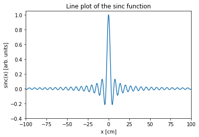
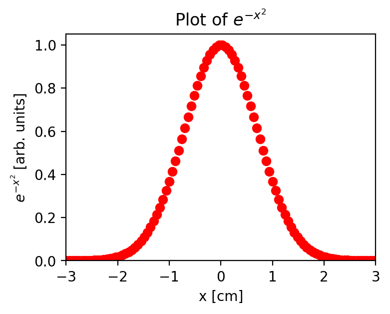
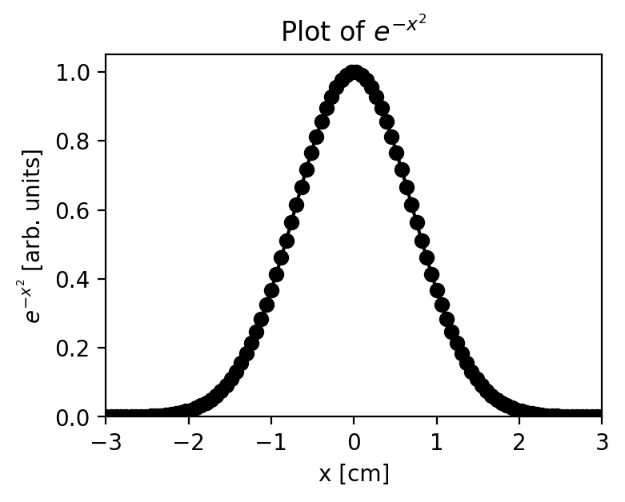
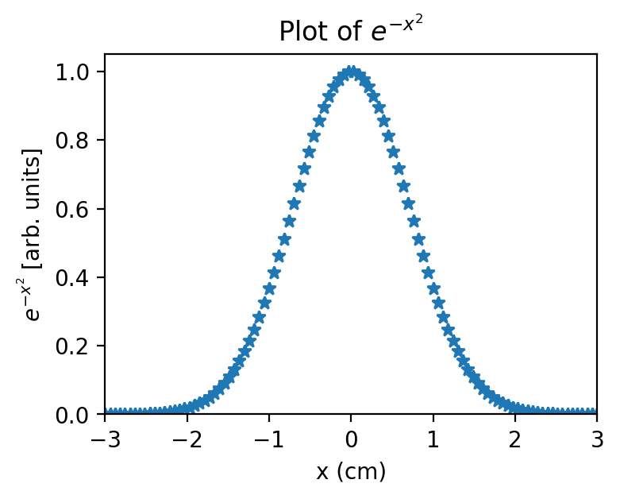
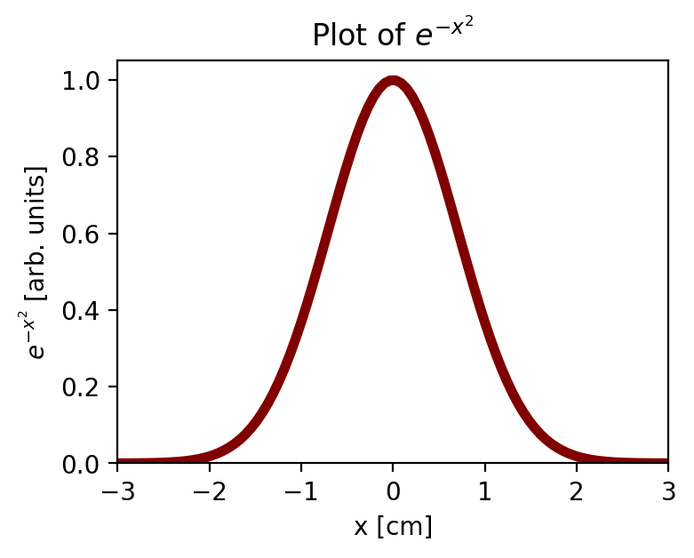
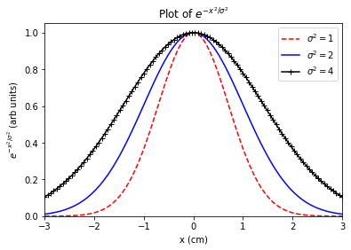
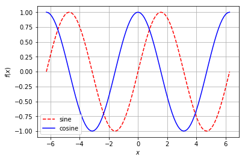

Visualization with matplotlib
Contents
Visualization with matplotlib¶
Reference: Chapter 1 of Computational Nuclear Engineering and Radiological Science Using Python, R. McClarren (2018)
Learning Objectives¶
After studying this notebook, completing the activities, and asking questions in class, you should be able to:
Add multiple lines to a single plot
Specify the color, style, width, and other properties of a line
Add title, legend, and axes labels
Save figure to a PDF, download from Vocareum
Add grid lines
Look up advanced formatting options in matplotlib documentation and examples
Matplotlib Basics¶
Matplotlib is a simple plotting tool that allows you to plot the arrays from NumPy. We already saw an example above. Matplotlib is designed to be intuitive, easy to use, and mimic MATLAB syntax.
As an example, let’s plot the cardinal sine function: $\(\mathrm{sinc}(x) = \frac{\sin(x)}{x}\)$
import matplotlib.pyplot as plt
%matplotlib inline
import numpy as np
#make a simple plot
x = np.linspace(-100,100,1000)
y = np.sin(x)/x
#plot x versus y
plt.plot(x,y)
#label the y axis
plt.ylabel("sinc(x) [arb. units]");
#label the x axis
plt.xlabel("x [cm]")
#give the plot a title
plt.title("Line plot of the sinc function")
#show the plot
plt.axis([-100,100,-.4,1.05])
# Save the figure to our Google Drive folder Colab-20258
plt.savefig("figure.pdf")
plt.show()

Notice how I labeled each axis and even gave the plot a title. I also included the units for each axis. You should always do this in your work. Label-less plots are meaningless.
3b-i. Customizing Plots¶
You can also change the plot type.
x = np.linspace(-3,3,100)
y = np.exp(-x**2)
fig = plt.figure(figsize=(4,3), dpi=200)
plt.plot(x,y,"ro"); #red dots on the plot
plt.ylabel("$e^{-x^2}$ [arb. units]");
plt.xlabel("x [cm]")
plt.title("Plot of $e^{-x^2}$")
plt.axis([-3,3,0,1.05])
plt.show()

x = np.linspace(-3,3,100)
y = np.exp(-x**2)
fig = plt.figure(figsize=(4,3), dpi=200)
plt.plot(x,y,"ko-"); #black dots and a line on the plot
plt.ylabel("$e^{-x^2}$ [arb. units]");
plt.xlabel("x [cm]")
plt.title("Plot of $e^{-x^2}$")
plt.axis([-3,3,0,1.05])
plt.show()

There are many options you can adjust for the plot. For a full list, see http://matplotlib.org/users/pyplot_tutorial.html
Here are some more examples. One of the things you’ll notice is that in matplotlib you can include LaTeX mathematics in your labels by enclosing it in dollar signs. In LaTeX to use Greek letters you use a backslash before the name of the letter, and other usually obvious characters. To find out how to do anything with LaTeX, just Google it.
x = np.linspace(-3,3,100)
y = np.exp(-x**2)
fig = plt.figure(figsize=(4,3), dpi=200)
plt.plot(x,y,marker="*", linewidth=0);
plt.ylabel("$e^{-x^2}$ [arb. units]");
plt.xlabel("x (cm)")
plt.title("Plot of $e^{-x^2}$")
plt.axis([-3,3,0,1.05])
plt.show()

x = np.linspace(-3,3,100)
y = np.exp(-x**2)
fig = plt.figure(figsize=(4,3), dpi=200)
plt.plot(x,y,marker="",linewidth=4,color="maroon");
plt.ylabel("$e^{-x^2}$ [arb. units]");
plt.xlabel("x [cm]")
plt.title("Plot of $e^{-x^2}$")
plt.axis([-3,3,0,1.05])
plt.show()

3b-ii. Plotting multiple lines¶
You can also plot multiple lines on a plot. If you include the a label for each plot, invoking the legend command, which puts the legend on the plot.
x = np.linspace(-3,3,100)
# Line 0
y = np.exp(-x**2)
plt.plot(x,y,marker="", color="r",
linestyle="--", label="$\sigma^2 = 1$");
# Line 1
y1 = np.exp(-x**2/2)
plt.plot(x,y1,color="blue",
label="$\sigma^2 = 2$")
# Line 2
y2 = np.exp(-x**2/4)
plt.plot(x,y2,color="black",
marker = "+", label="$\sigma^2 = 4$")
# Add labels, title, legend, etc.
plt.ylabel("$e^{-x^2/\sigma^2}$ (arb units)");
plt.xlabel("x (cm)")
plt.title("Plot of $e^{-x^2/\sigma^2}$")
plt.legend(loc="best")
plt.axis([-3,3,0,1.05])
plt.show()

Fancier plots are also possible. We’ll introduce whatever you need as we go.
If you ever want to do something fancy in MatPlotLib, try starting with one of these examples: https://matplotlib.org/tutorials/index.html
Dashed red line for sine.
Solid blue line for cosine.
Legend located in the lower left corner.
Label the axes with \(x\) and \(f(x)\)
Add grid lines.
### BEGIN SOLUTION
x = np.linspace(-2*np.pi,2*np.pi,100)
plt.plot(x, np.sin(x),color="red",linestyle="--",label="sine")
plt.plot(x, np.cos(x),color="blue",linestyle="-",label="cosine")
plt.xlabel("$x$")
plt.ylabel("$f(x)$")
plt.grid(1)
plt.legend(loc="lower left")
plt.show()
### END SOLUTION
